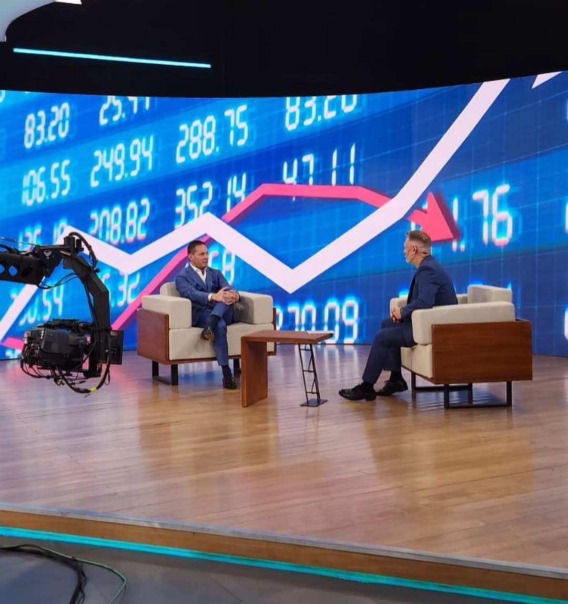

Logística Internacional · Comercio Exterior · Supply Chain
Más de 35 años transformando el comercio internacional con visión estratégica, presencia global y un compromiso inquebrantable con la excelencia.
Desde mis inicios en 1990 hasta liderar CargoNet Group, cada paso ha sido una apuesta por la excelencia y la innovación en logística internacional.
Ingresé formalmente al mundo del comercio exterior el 1 de febrero de 1990. En enero de 1999 fundé mi propia empresa, Connexion Transportes Internacionales S.A., en Argentina. El 20 de marzo de 2002 activé CargoNet, expandiendo a Estados Unidos en 2005 y a Brasil en 2009.
Viví en Miami por 5 años desarrollando la oficina local, y luego en Palma de Mallorca por 3 años fortaleciendo la presencia europea. Hoy dirijo CargoNet Group y soy Director de Logística en el Comité Argentina de la CCM.
Conocer más
Después de décadas acumulando experiencia en el corazón del comercio internacional, Germán Muchico llegó a una conclusión fundamental: el mercado de logística y comercio exterior estaba fragmentado, ineficiente y no servía adecuadamente a sus clientes. Los proveedores tradicionales ofrecían servicios desarticulados: un transportista que movía carga sin entender estrategia, un despachante aduanal que procesaba documentos sin visión integral, un operador portuario que optimizaba solo sus márgenes, un banco que mediaba transacciones sin asesoría comercial.
El resultado: clientes desmembrados, costos ocultos, riesgos no identificados, oportunidades perdidas. Germán vio la oportunidad donde otros solo veían mercado. Comprendió que lo que faltaba era un socio verdaderamente consultivo—alguien que integrara toda la cadena logística bajo una lógica estratégica única. Fue entonces cuando decidió fundar CargoNet Group, no como un transportista más, sino como un acto de rebelión contra la ineficiencia sistémica del sector.
Tres principios fundamentales que guían cada operación, cada decisión y cada relación comercial.
Después de ver cómo la corrupción plagaba el sector, Germán estableció desde el día uno que CargoNet Group operaría con transparencia absoluta. Esto no fue debilidad competitiva—fue fortaleza. Los clientes serios querían trabajar con un socio confiable. Certificación ISO 37001, Código de Ética explícito y línea de denuncias confidencial (+54 11 5638-4944).
Germán sabía que el sector evolucionaba constantemente. CargoNet Group se construyó sobre la premisa de que la innovación no era un lujo, sino una obligación. Desde monitoreo en tiempo real hasta análisis predictivo, la tecnología es parte del ADN operativo. La complacencia mata a las organizaciones; la innovación constante las mantiene vivas.
Después de décadas viendo mediocridad, Germán simplemente no la toleraba. Cada empleado de CargoNet Group hereda este principio: no hay "suficientemente bueno"—solo hay excelencia o fracaso. La excelencia no es meta, es punto de partida. Se ve en cada detalle: puntualidad de entregas, precisión de documentación, calidad del asesoramiento.
Un enfoque radical que separó a CargoNet Group de la competencia: cuatro fases que transforman la logística en una verdadera ventaja competitiva.
La conversación comienza con análisis profundo, no con propuestas de transporte. ¿Dónde se pierden costos? ¿Cuáles son tus riesgos regulatorios? ¿Qué oportunidades de optimización existen? Este enfoque—radical para la industria—marca la diferencia.
Soluciones personalizadas para cada cliente. No hay plantillas ni soluciones genéricas. Cada organización recibe una arquitectura logística diseñada específicamente para sus realidades, desafíos y objetivos comerciales.
Coordinación perfecta, monitoreo riguroso y responsabilidad absoluta. Cuando CargoNet Group se compromete con un resultado, es una promesa. Cada eslabón de la cadena es gestionado con precisión quirúrgica.
Cada proyecto es un proceso de mejora constante. Datos, resultados, métricas: se analizan continuamente para optimización incremental. En logística no hay destino final, solo evolución permanente.
CargoNet Group se construyó como una red logística multicontinental estratégicamente posicionada en los corredores de comercio más importantes del mundo.
Oficina Central en Puerto Madero, CABA (Olga Cossettini 1545). Oficina en Aeropuerto Ezeiza para coordinación aduanera en tiempo real. Oficinas regionales en Mar del Plata y Mendoza para cobertura nacional completa.
Cargo Net USA LLC en Miami, Florida (6735 NW 36th Street, STE 390). El principal hub logístico de América Latina hacia Estados Unidos. Coordinación directa con reguladores estadounidenses y servicio al corredor Latinoamérica-EE.UU.-Caribe.
CargoNet Logistic Brasil en São Paulo (Iraí 438 CJ 71, Indianópolis). Presencia estratégica en el mayor mercado de América del Sur, capturando flujos comerciales bilaterales cruciales para la región.
Uno de los diferenciales más claros de CargoNet Group bajo la dirección de Germán Muchico es su especialización en cargas complejas—particularmente la División de Perecederos. Transportar mercancías perecederas a múltiples temperaturas (fresco, congelado, ambiente) requiere: infraestructura especializada (almacenes de temperatura controlada), expertise regulatoria (INVIMA, FDA, SENASA), coordinación perfecta (una cadena rota = mercancía perdida) y conocimiento de mercados específicos como flores, frutas, carnes, lácteos y mariscos.
Muchos competidores evitan estas cargas por su complejidad. Germán Muchico y CargoNet Group las abrazaron. ¿Por qué? Porque precisamente donde hay complejidad hay diferenciación. Y porque los clientes dispuestos a pagar por soluciones verdaderamente especializadas existen. Hoy, la División de Perecederos maneja volúmenes importantes desde toda la región hacia mercados globales, posicionando a CargoNet Group como el socio logístico de confianza para operadores premium que no pueden fallar.
En un sector lleno de competidores, estas son las razones claras que nos diferencian y nos posicionan como líderes.
Somos consultores que ejecutamos soluciones logísticas. No solo movemos carga, transformamos cadenas de suministro. La diferencia es fundamental.
La reputación de Germán Muchico abre puertas, genera confianza y atrae clientes premium. Es el activo más valioso de CargoNet Group, construido durante décadas.
Posicionamiento estratégico en Argentina, Estados Unidos y Brasil para servir los corredores comerciales más dinámicos de América con presencia local real.
La División de Perecederos maneja cargas que competidores no pueden aceptar. Donde hay complejidad, hay diferenciación y valor agregado.
Monitoreo en tiempo real, análisis predictivo y automatización de procesos. La tecnología no es un accesorio, es parte del core operativo de CargoNet Group.
ISO 37001, Código de Ética explícito, línea de denuncias confidencial. CargoNet Group opera con absoluta transparencia en un sector donde la corrupción es común.
Transformamos desafíos en oportunidades. Juntos, construimos éxito global.